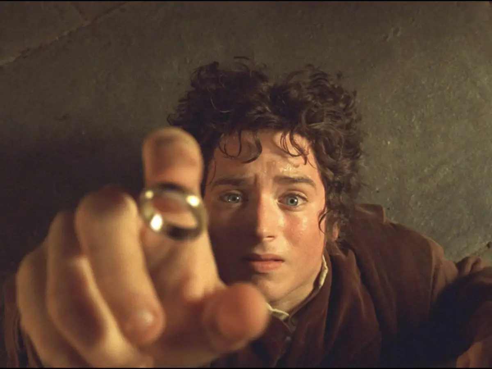

FilmesEnsaio
Por que O Senhor dos Anéis ainda parece maior do que quase todo blockbuster atual
A trilogia de Peter Jackson envelheceu melhor do que boa parte do cinema de espetáculo porque nunca confundiu escala com excesso.